Hybride Architectuur: Het Beste van Twee Werelden met Supabase en Spring Boot
Gepubliceerd op 14 January 2026
Kies niet voor de eenvoud van Supabase of de kracht van Spring Boot, waarom combineert u niet beide? Ontdek een hybride architectuur die het beste van elke technologie benut.
- tic
-
[]
- Het valse dilemma van de moderne architectuur
- Architecturale visie
- Ontwerpprincipes
- Orchestratie van de Flux
- Beslissingsmatrix
- Voorbeelden van architectuur per projecttype
- Strategie voor progressieve migratie
- Kosten en operationele overwegingen
- Conclusie: Het perfecte evenwicht
- Om verder te gaan
- Ontwikkelingsperspectieven
- Architectonische getuigenissen
- Synthese : Een modern architecturaal paradigma
- Eindconclusie
Het valse dilemma van de moderne architectuur
Wanneer men een moderne toepassing bouwt met een statische frontend, komt men vaak voor een binaire keuze te staan :
-
Alles inzetten op een Backend-as-a-Service-oplossing(Supabase, Firebase) - eenvoudig maar beperkt
-
Bouw een compleet backend(Spring Boot, Node.js) - krachtig maar complex
Deze keuze is een valse dilemma. De hybride architectuur biedt een derde weg: elke technologie gebruiken waar ze uitblinkt.
Architecturale visie
De traditionele architectuur: monolithisch
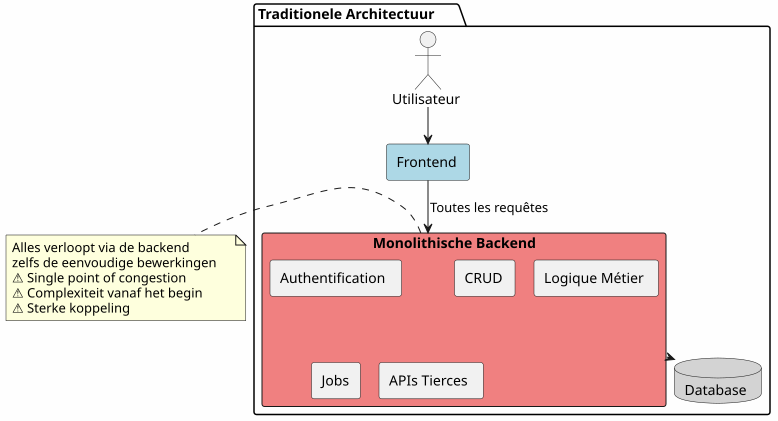
In deze aanpak moeten zelfs de eenvoudigste bewerkingen (het lezen van een artikel, het maken van een reactie) via uw backend verlopen. U betaalt de kosten van de complexiteit vanaf de eerste dag.
De BaaS-architectuur: Iedere gedelegeerde
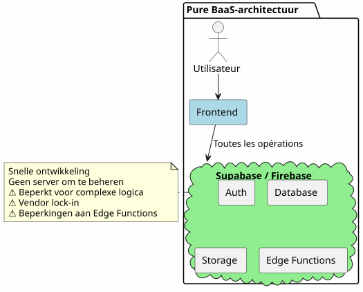
Aan de andere kant is het alles delegeren naar een BaaS in het begin verleidelijk, maar het toont al snel zijn grenzen zodra de bedrijfslogica complexer wordt.
De Hybride Architectuur: Scheiding van Verantwoordelijkheden
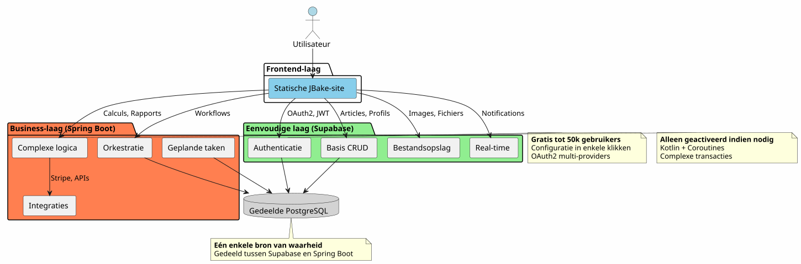
De hybride architectuur scheidt duidelijk de verantwoordelijkheden op basis van de complexiteit en de aard van de operaties.
Ontwerpprincipes
Princip 1: Begin simpel, ontwikkel intelligent
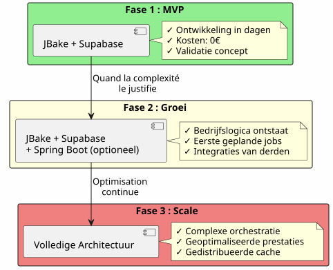
Bouw Spring Boot niet als je het niet nodig hebt.Begin met Supabase, voeg Spring Boot toe wanneer de complexiteit dat rechtvaardigt.
Beginsel 2: Scheiding op basis van aard van de bewerking

Principe 3: Een enkele bron van waarheid
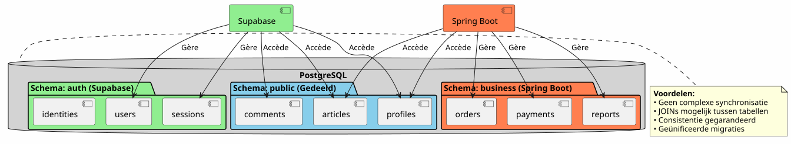
Door dezelfde PostgreSQL-instantie te delen, werken Supabase en Spring Boot aan dezelfde gegevens zonder complexe synchronisatie.
Orchestratie van de Flux
Flux 1 : Gecentraliseerde authenticatie
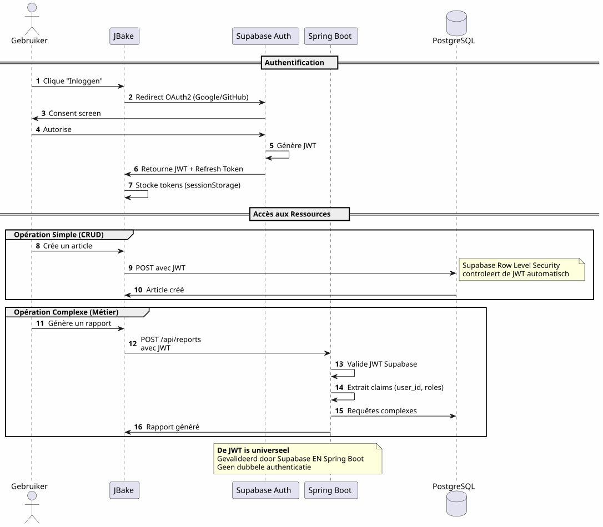
Belangrijk punt: énkel authenticatieproces, énkel JWT, bruikbaar overal.
Flux 2 : Orchestration van een complex bedrijfsproces
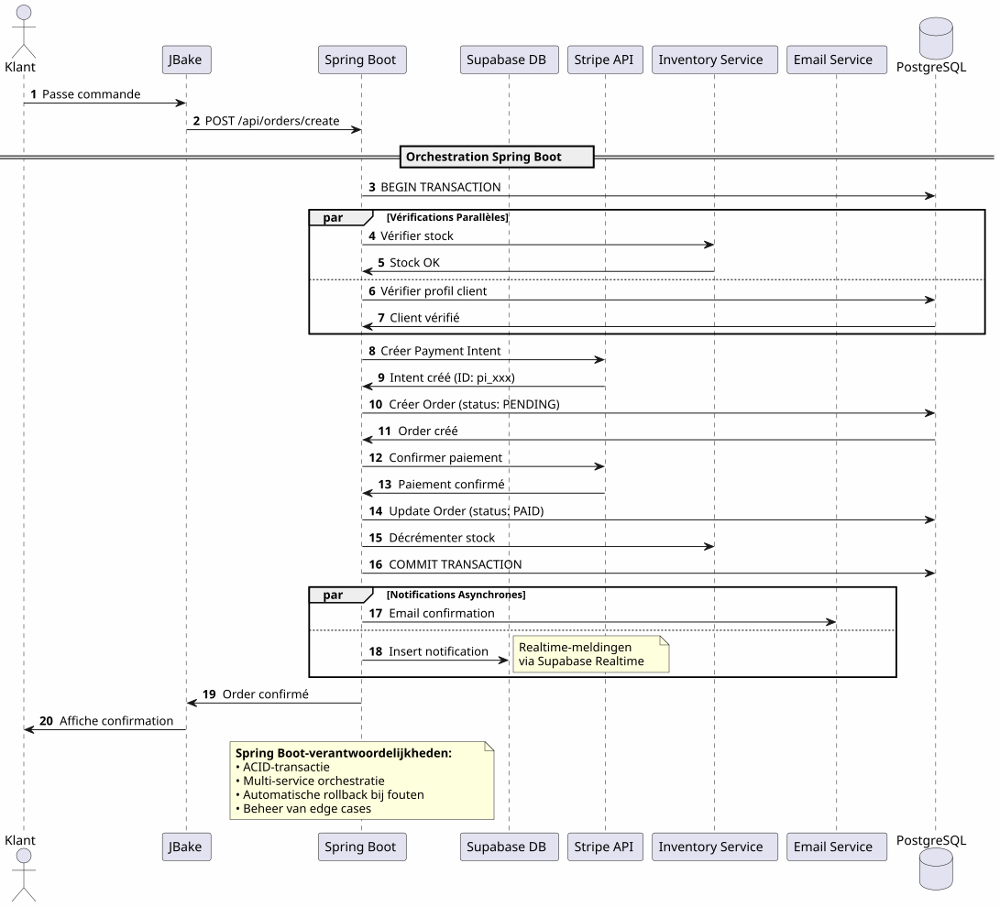
Wat Spring Boot brengtBetrouwbare orchestration van complexe processen die meerdere systemen betreffen met transactiegarantie
Flux 3 : Geplande taken en synchronisaties
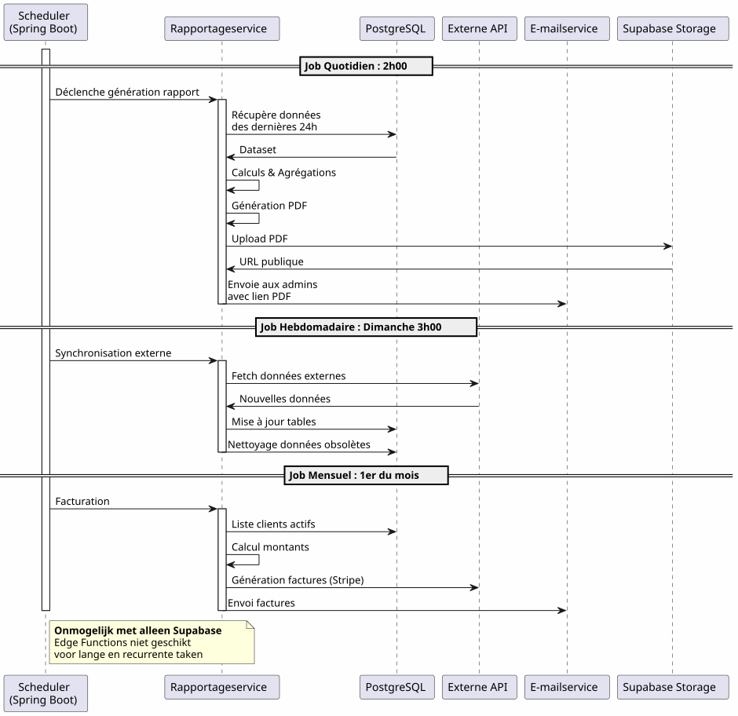
Wat Spring Boot brengtBetrouwbare geplande taken met staatbeheer, automatische herprobe, en gegarandeerde uitvoering.
Beslissingsmatrix
Wanneer Gebruiken Supabase ?
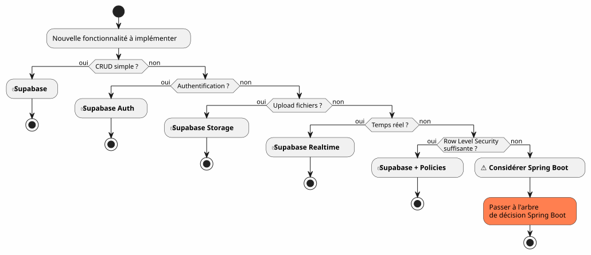
Wanneer Spring Boot gebruiken?
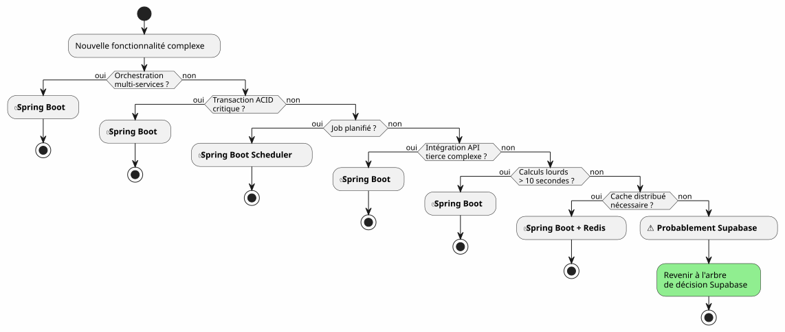
Voorbeelden van architectuur per projecttype
Blog / Portfolio
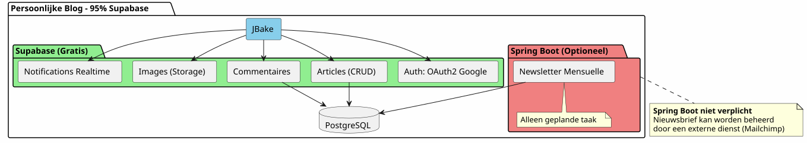
vonnis: 100% Supabase is ruimschoots voldoende.
SaaS‑toepassing
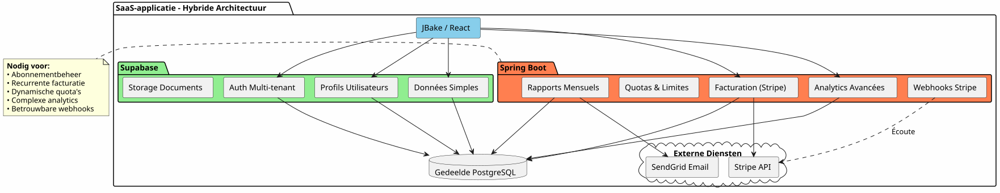
vonnisHybride architectuur vereist. Supabase voor het belangrijkste deel, Spring Boot voor het kritieke deel (betalingen, facturatie).
E-commerce
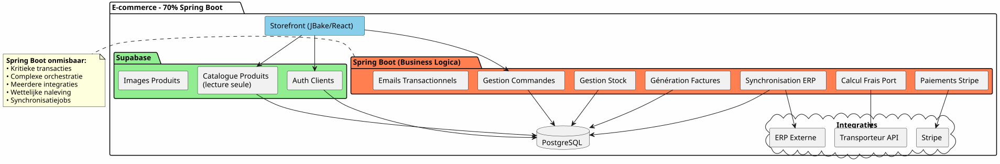
Uitspraak: Spring Boot onmisbaar. Supabase alleen voor auth en catalogus.
Strategie voor progressieve migratie
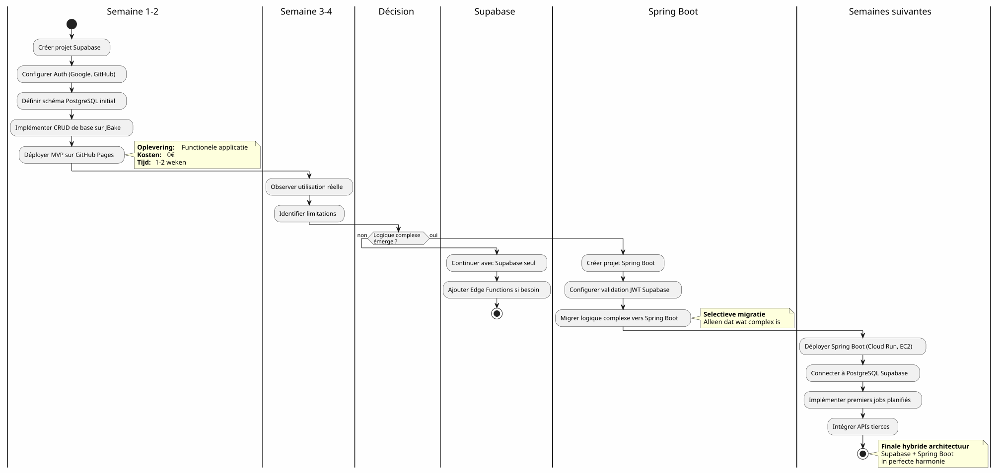
Kosten en operationele overwegingen
Kostenstructuur
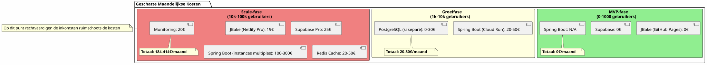
Operationele verantwoordelijkheden
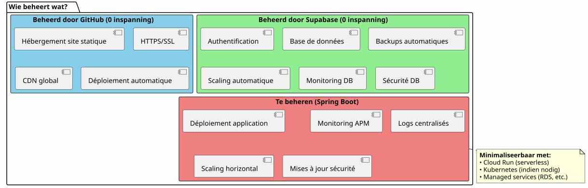
Conclusie: Het perfecte evenwicht
De hybride architectuur Supabase + Spring Boot is geen compromis, het is eensynergie.
De principes om te onthouden

Wanneer kiezen voor deze architectuur ?
✅ Deze architectuur is ideaal als :
-
Je wilt snel starten (MVP in dagen, niet in maanden)
-
U anticipeert een groei van de bedrijfscomplexiteit
-
U wilt de initiële kosten minimaliseren
-
Je houdt van PostgreSQL en wilt een unieke bron van waarheid
-
U waardeert Kotlin en de Coroutines voor de zakelijke code
-
U wilt het totale vendor lock-in vermijden
❌ Deze architectuur is NIET geschikt als:
-
Uw project is eenvoudig en blijft dat (persoonlijk blog → 100% Supabase volstaat)
-
Je hebt al een gevestigde backend-stack die je beheerst
-
Je prefereert een traditioneel monoliet
-
U heeft .NET, Python of een andere backendtaal nodig
eindoverzicht
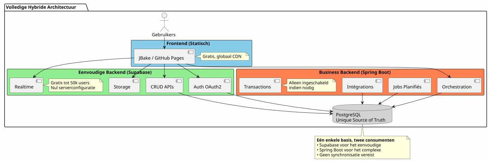
Het beste van twee werelden
Deze architectuur geeft u:
🚀 De snelheid van Supabase
-
Opstart in uren, niet in weken
-
OAuth2-authenticatie in een paar klikken
-
Automatisch gegenereerde REST-API’s
-
Zero-configuratie
💪 De kracht van Spring Boot
-
Kotlin en coroutines voor elegante asynchrone code
-
Orchestration van complexe bedrijfsprocessen
-
Betrouwbare geplande taken
-
ACID-transactiegaranties
-
Volledig Spring-ecosysteem
💰 De progressieve economie
-
0€ om te starten en te valideren
-
Kosten die de groei volgen
-
Geen vroegtijdig over-engineering
🎯 Architecturale flexibiliteit
-
Progressieve migratie zonder herontwerp
-
Toevoegen van Spring Boot alleen indien nodig
-
Geen totale vendor lock-in
-
Evolutieve architectuur
Om verder te gaan
Technische middelen
Supabase-documentatie :
Documentatie Spring Boot :
Aanvullende artikelen :
-
Beveiliging van API’s met JWT
-
Optimalisatie van PostgreSQL-prestaties
-
progressieve migratiepatronen
-
Foutafhandeling in gedistribueerde architectuur
Werkelijke gebruiksscenario’s
Deze hybride architectuur wordt succesvol gebruikt in :
-
SaaS B2B: Supabase-authenticatie, Spring Boot-facturering
-
marktplaatsen: Catalogus Supabase, transacties Spring Boot
-
Contentplatformen: Artikelen Supabase, analyse Spring Boot
-
interne gereedschappen: CRUD Supabase, werkstromen Spring Boot
Opstart checklist
Phase 1 - Fundamenten (Week 1)
-
Maak Supabase-account aan - [ ] Configureer PostgreSQL-project - [ ] Activeer Auth (Google, GitHub) - [ ] Definieer initieel schema - [ ] Configureren Row Level Security - [ ] API’s testen sinds JBake
Fase 2 - MVP (Week 2-3)
-
Hoofdpagina’s implementeren - [ ] OAuth2-authenticatie integreren - [ ] CRUD-formulieren maken - [ ] Configureren Storage voor bestanden - [ ] Deployen op GitHub Pages - [ ] Testen onder reële omstandigheden
Fase 3 - Evolutie (Volgens behoeften)
-
Identificeer behoeften aan complexe logica - [ ] Een Spring Boot-project aanmaken indien nodig - [ ] Configureren JWT-validatie Supabase - [ ] Verbinding maken met PostgreSQL Supabase - [ ] Migreren complexe functionaliteiten - [ ] Geplande taken implementeren - [ ] Spring Boot implementeren (Cloud Run, enz.)
Anti-Patronen om te vermijden
❌ Niet doen :
-
Gegevens kopiëren tussen Supabase en Spring Boot
-
Creëer twee afzonderlijke PostgreSQL-databases
-
Codeer de authenticatie zelf
-
Gebruik Spring Boot voor eenvoudig CRUD
-
over-architectureren vanaf het begin
-
Negeer Row Level Security van Supabase
✅ Liever doen :
-
Deel één PostgreSQL-database
-
Laten Supabase de authenticatie beheren
-
Gebruik Spring Boot alleen voor de complexiteit
-
Begin eenvoudig, evolueer geleidelijk
-
De krachten van elke technologie benutten
-
Beveiligen met RLS op databaseniveau
Ontwikkelingsperspectieven
Toevoeging van nieuwe capaciteiten
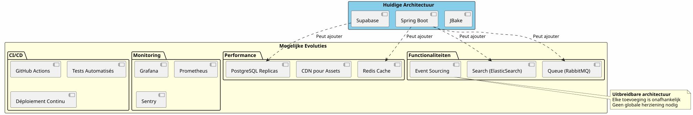
horizontaal schalen
Wanneer je applicatie groeit, schaalt de hybride architectuur vanzelf :
Supabase :
-
schaalt automatisch tot miljoenen bewerkingen
-
Read replicas voor leesprestaties
-
punt-in-tijd herstel voor veiligheid
Spring Boot:
-
Meerdere instanties achter load balancer
-
Stateless design vergemakkelijkt het horizontaal scaling
-
Kubernetes voor orchestratie indien nodig
PostgreSQL :
-
Partitioning voor grote tabellen
-
verbindingenpool (PgBouncer)
-
Sharding, indien werkelijk nodig (zeldzaam)
Architectonische getuigenissen
Startup SaaS (50k gebruikers)
_ We zijn begonnen met 100% Supabase. Bij 5k gebruikers hebben we Spring Boot toegevoegd, alleen voor Stripe-facturatie en maandelijkse rapporten. Een jaar later gaat nog steeds 80% van onze operaties via Supabase. Spring Boot beheert alleen het kritieke deel. Deze scheiding heeft ons in staat gesteld om te schalen zonder herontwerp. _
E‑learningplatform (10k gebruikers)
_ De OAuth2-authenticatie van Supabase heeft ons 3 weken ontwikkelingstijd bespaard. De auto-gegenereerde APIs beheren ons volledige cursuscatalogus. Spring Boot wordt alleen gebruikt voor PDF-certificaten en voortgangs-e-mails. Eenvoudige, onderhoudbare, schaalbare architectuur. _
Marketplace B2B (3k gebruikers)
__ Spring Boot beheert transacties tussen kopers en verkopers (kritiek). Supabase beheert alles andere: profielen, realtime berichten, documenten. Het feit dat ze dezelfde PostgreSQL-database delen, bespaart ons complexe synchronisatie. De beste architecturale keuze die we hebben gemaakt. </think>
Synthese : Een modern architecturaal paradigma
De hybride architectuur van Supabase + Spring Boot vertegenwoordigt een nieuw paradigma:de architectonische specialisatie.
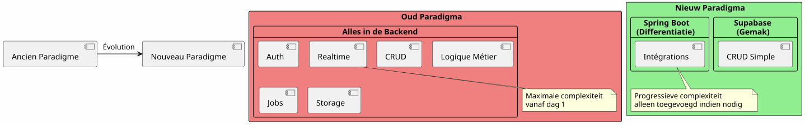
Het fundamentele principe:Bouw niet iets wat er al bestaat als een dienst. Concentreer je op wat jouw toepassing onderscheidt.
De 80/20-regel
In de meeste toepassingen :
-
80% van de operatieszijn standaard CRUD → Supabase
-
20% van de operatiesvereisen de zakelijke logica → Spring Boot
Deze natuurlijke regel rechtvaardigt de hybride architectuur.
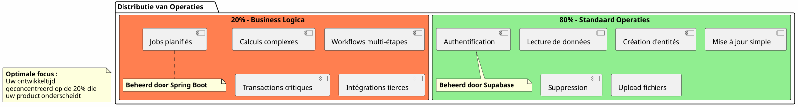
Eindconclusie
De hybride architectuur is geen technisch compromis, het is eenstrategische beslissing.
Het stelt u in staat om :
-
✅ Start snel met een functioneel MVP
-
✅ Valideer uw markt zonder zware investering
-
✅ Stapsgewijs evolueren wanneer de complexiteit dat vereist
-
✅ Beheers uw kosten bij elke stap
-
✅ Haal het beste uit elke technologie
-
✅ Vermijd voortijdige over-engineering
-
✅ Flexibiliteit behouden voor de toekomst
Ze vertegenwoordigt:
-
🎯Pragmatisme: Elke technologie waarin ze uitblinkt
-
🚀Snelheid: minimale time-to-market
-
💰economie: Kosten afgestemd op de waarde
-
🔮schaalbaarheid: Architectuur die met je meegroeit
-
🛡️Robuustheid: Bewezen en betrouwbare diensten
Uw volgende stap
Als deze architectuur spreekt je aan, hier is waar je moet beginnen :
-
Maak een Supabase-account aan(gratis)
-
Definieer uw minimale gegevensschema
-
Configureer de OAuth2-authenticatie
-
Maak uw eerste JBake-pagina die de API verbruikt
-
Deploy op GitHub Pages
U zult een functioneel MVP hebben inenkele dagen.
Spring Boot komt vanzelf wanneer je het nodig hebt. Niet eerder.
Hybride architectuur is de kunst om precies te bouwen wat nodig is, wanneer het nodig is.
Goede ontwikkeling ! 🚀
Deel dit artikel als je denkt dat het andere ontwikkelaars kan helpen de goede architecturale keuzes te maken.